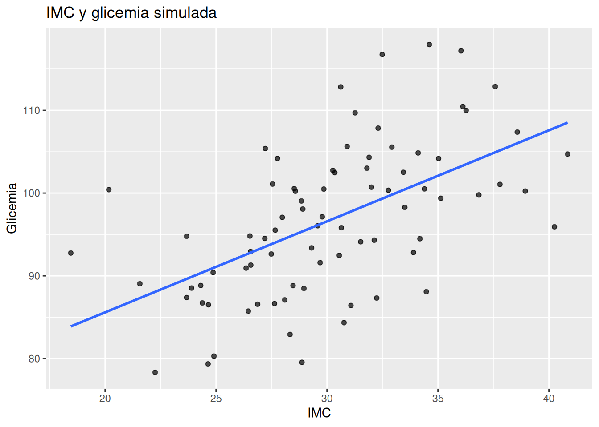
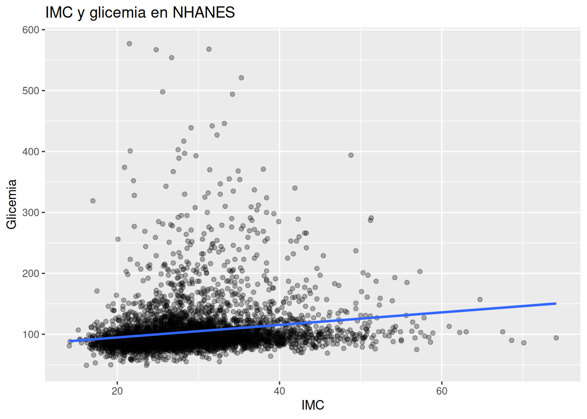

set.seed(123)
# Simular el imc y la glicemia de 80 pacientes
datos <- tibble(
imc = rnorm(80, mean = 30, sd = 5)
) %>%
mutate(
glicemia = 70 + 0.9 * imc + rnorm(80, 0, 8)
)18.- Interpretar resultados bayesianos
1. Intuición
Hasta ahora hemos construido modelos bayesianos para explorar relaciones clínicas en NHANES:
- IMC y glicemia
- Circunferencia de cintura y metabolismo
- Actividad física y salud metabólica
Pero construir el modelo es solo una parte del trabajo.
La verdadera pregunta clínica es:
“¿Cómo interpretamos estos resultados?”
Y aquí aparece una de las mayores ventajas del enfoque bayesiano:
👉 Bayes habla el lenguaje natural de la medicina.
En muchos análisis tradicionales, el resultado suele terminar reducido a algo como:
- “p < 0.05”
- “estadísticamente significativo”
- “no significativo”
El problema es que ese lenguaje no se parece mucho a cómo pensamos en clínica.
Un médico rara vez piensa así.
Normalmente pensamos de esta manera:
- “Parece bastante probable…”
- “Existe evidencia moderada…”
- “Es poco probable que…”
- “Todavía hay incertidumbre…”
Y precisamente eso es lo que permite Bayes.
Un modelo bayesiano no da respuestas exactas
Un modelo bayesiano no intenta decir:
❌ “El efecto verdadero es exactamente 0.42”
En cambio, dice algo mucho más realista:
✅ “Los valores más plausibles están alrededor de 0.42”
✅ “Existe incertidumbre”
✅ “Algunos valores son más probables que otros”
Pensar en distribuciones, no en números únicos
Uno de los cambios mentales más importantes en Bayes es este:
👉 dejar de pensar en estimaciones únicas
👉 empezar a pensar en distribuciones
Por ejemplo:
Supongamos que estudiamos la relación entre IMC y glicemia.
Un enfoque clásico podría decir:
- “Por cada aumento de 1 unidad de IMC, la glicemia aumenta 0.8 mg/dL”
Pero Bayes diría algo más completo:
- “Los valores más plausibles están entre 0.4 y 1.2”
- “Es muy probable que el efecto sea positivo”
- “Existe cierta incertidumbre sobre el tamaño exacto”
Eso se parece mucho más al razonamiento clínico real.
La incertidumbre no es un problema
Muchos principiantes sienten incomodidad cuando ven incertidumbre.
Pero en medicina, la incertidumbre siempre existe.
La diferencia es que Bayes:
👉 la hace visible
👉 la cuantifica
👉 la incorpora explícitamente
Y eso es extremadamente útil.
Porque la toma de decisiones clínicas rara vez ocurre con certeza absoluta.
Intervalos creíbles: una interpretación natural
Uno de los conceptos más útiles en Bayes es el intervalo creíble.
La interpretación intuitiva es:
“Hay un 95% de probabilidad de que el verdadero valor esté dentro de este rango.”
Por ejemplo:
- efecto plausible del IMC:
- entre 0.3 y 1.1 mg/dL
Eso significa:
👉 dados los datos y el modelo,
👉 esos son los valores más compatibles con la evidencia.
Bayes permite hablar en probabilidades directas
Y aquí aparece una de las ideas más poderosas del capítulo.
Con Bayes podemos decir cosas como:
- “Hay un 92% de probabilidad de que el efecto sea positivo.”
- “Existe una alta probabilidad de que mayor cintura se asocie con peor metabolismo.”
- “La evidencia es moderada, pero todavía incierta.”
Ese lenguaje es extremadamente natural para médicos.
Porque la clínica siempre trabaja con probabilidades.
Una analogía clínica útil
Imagina dos escenarios.
Escenario 1
Un médico dice:
“El resultado fue estadísticamente significativo.”
Eso realmente no nos dice mucho clínicamente.
Escenario 2
El médico dice:
“Hay aproximadamente un 90% de probabilidad de que este factor aumente el riesgo metabólico.”
Eso es mucho más interpretable.
Mucho más accionable.
Mucho más cercano a la toma real de decisiones.
El mensaje central del capítulo
👉 Un modelo bayesiano no entrega certezas absolutas.
👉 Entrega distribuciones de plausibilidad.
👉 Entrega probabilidades útiles para decidir bajo incertidumbre.
Y eso se parece mucho más a la medicina real.
2. Ejemplo simple (simulación en R)
Vamos a comenzar con un ejemplo pequeño y simple.
Queremos explorar si un mayor IMC podría asociarse con mayor glicemia.
Simular datos
Visualizar datos
# Diagrama de dispersión y tendencia que relaciona el imc con la
# glicemia
ggplot(datos, aes(imc, glicemia)) +
geom_point(alpha = 0.7) +
geom_smooth(method = "lm", se = FALSE) +
labs(
title = "IMC y glicemia simulada",
x = "IMC",
y = "Glicemia"
)
Ajustar el modelo bayesiano
# Modelar el efecto de el imc a la glicemia
modelo <- stan_glm(
glicemia ~ imc,
data = datos,
family = gaussian(),
chains = 2,
iter = 1000,
refresh = 0
)Ver resultados
# Imprimir resultado del modelo
print(modelo, digits = 2) # produce:stan_glm
family: gaussian [identity]
formula: glicemia ~ imc
observations: 80
predictors: 2
------
Median MAD_SD
(Intercept) 63.11 5.56
imc 1.11 0.18
Auxiliary parameter(s):
Median MAD_SD
sigma 7.61 0.61
------
* For help interpreting the printed output see ?print.stanreg
* For info on the priors used see ?prior_summary.stanreg¿Cómo interpretamos esto?
El coeficiente de IMC es aproximadamente 1.04.
Eso significa:
👉 por cada aumento de 1 unidad de IMC,
👉 la glicemia probablemente aumenta alrededor de 1.04 mg/dL.
Pero lo más importante:
👉 no estamos diciendo que el valor exacto sea 1.04.
Estamos diciendo:
- valores cercanos a 1.04 son plausibles
- existe incertidumbre
- algunos valores son más compatibles con los datos que otros
Obtener intervalos creíbles
# Imprimir intervalo posterior
posterior_interval(modelo, prob = 0.95) # produce: 2.5% 97.5%
(Intercept) 52.6631751 75.326697
imc 0.7191751 1.461611
sigma 6.5422657 9.065549Interpretación clínica del intervalo
Podemos decir:
“Hay un 95% de probabilidad de que el verdadero efecto del IMC sobre la glicemia esté entre 0.66 y 1.18 mg/dL.”
Ese lenguaje es perfectamente natural para clínica.
Probabilidad de que el efecto sea positivo
Ahora viene una de las partes más interesantes.
Podemos calcular directamente:
👉 ¿qué proporción de la distribución posterior es mayor que cero?
# Conocer la probabilidad de que el efecto sea positivo
posterior <- as.matrix(modelo)
mean(posterior[, "imc"] > 0) [1] 1Interpretación
Eso significa:
“Existe una probabilidad extremadamente alta de que un mayor IMC se asocie con mayor glicemia..”
Eso es increíblemente intuitivo.
Y muchísimo más cercano al lenguaje clínico real.
La idea importante
Observa el cambio conceptual.
No estamos preguntando:
❌ “¿Existe o no existe efecto?”
Estamos preguntando:
✅ “¿Qué tan probable es que el efecto sea positivo?”
Ese cambio mental es fundamental en Bayes.
3. Ejemplo aplicado con NHANES
Ahora llevemos estas ideas a datos reales.
Usaremos un modelo simple ya conocido:
- glicemia → LBXSGL
- IMC → BMXBMI
Preparar datos
# Seleccionar las variables que voy a usar
nhanes_modelo <- df_obesidad %>%
select(LBXSGL, # glicemia
BMXBMI,# índice de masa corporal
BMXWAIST, # cintura
PAD680 # minutos al día de actividad sedentaria
) %>%
drop_na() %>%
filter(
LBXSGL <= 600,
BMXBMI < 100,
BMXWAIST < 200,
PAD680 < 1000
)Visualizar relación
# Diagrama de dispersión y tendencia de la relación entre IMC y
# glicemia
ggplot(nhanes_modelo, aes(BMXBMI, LBXSGL)) +
geom_point(alpha = 0.3) +
geom_smooth(method = "lm", se = FALSE) +
labs(
title = "IMC y glicemia en NHANES",
x = "IMC",
y = "Glicemia"
)
Ajustar modelo bayesiano
# Modelar el efecto de el índice de masa corporal sobre la glicemia
modelo_imc <- stan_glm(
LBXSGL ~ BMXBMI,
data = nhanes_modelo,
family = gaussian(),
chains = 2,
iter = 1000,
refresh = 0
)Ver resultados
# Imprimir el modelo modelo_imc
print(modelo_imc) # produce:stan_glm
family: gaussian [identity]
formula: LBXSGL ~ BMXBMI
observations: 5225
predictors: 2
------
Median MAD_SD
(Intercept) 74.0 2.3
BMXBMI 1.0 0.1
Auxiliary parameter(s):
Median MAD_SD
sigma 39.6 0.4
------
* For help interpreting the printed output see ?print.stanreg
* For info on the priors used see ?prior_summary.stanregInterpretación clínica
Podemos traducir esto así:
“En promedio, mayores niveles de IMC se asocian con mayores niveles de glicemia.”
Y más específicamente:
“Por cada unidad adicional de IMC, la glicemia probablemente aumenta alrededor de 1.0 mg/dL.”
Obtener intervalo creíble
posterior_interval(modelo_imc,) # produce: 5% 95%
(Intercept) 70.5946633 77.815333
BMXBMI 0.9056916 1.151758
sigma 38.9879144 40.262733Interpretación clínica correcta
Podemos decir:
“Hay un 90% de probabilidad de que el verdadero efecto del IMC sobre la glicemia esté entre 0.89 y 1.17 mg/dL.”
Y esto tiene una interpretación clínica importante:
👉 prácticamente todo el rango es positivo.
Eso aumenta nuestra confianza en que existe una asociación positiva.
Calcular probabilidad de efecto positivo
# Calcular la probabilidad de efecto positivo:
posterior <- as.matrix(modelo_imc)
mean(posterior[, "BMXBMI"] > 0) # produce:[1] 1Traducción clínica
Podemos escribir:
“Existe una probabilidad extremadamente alta de que un mayor IMC se asocie con mayor glicemia.”
Observa algo importante:
👉 no estamos hablando de “significativo” o “no significativo”.
Estamos hablando de:
- probabilidad
- plausibilidad
- incertidumbre
Ejemplo con cintura abdominal
Ahora usemos otra variable clínicamente muy importante:
- cintura → BMXWAIST
Ajustar modelo
# Modelar el efecto de la cintura sobre la glicemia
modelo_cintura <- stan_glm(
LBXSGL ~ BMXWAIST,
data = nhanes_modelo,
family = gaussian(),
chains = 2,
iter = 1000,
refresh = 0
)Ver intervalo creíble
posterior_interval(modelo_cintura) # produce: 5% 95%
(Intercept) 40.2665938 51.6541520
BMXWAIST 0.5306345 0.6456644
sigma 38.4773605 39.6399694Interpretación clínica
Podemos decir:
“Existe una alta probabilidad de que mayor circunferencia de cintura se asocie con mayor glicemia.”
Y además:
“Los valores más plausibles del efecto están entre 0.53 y 0.64 mg/dL por cada cm adicional de cintura.”
¿Por qué esto es clínicamente útil?
Porque ahora podemos pensar en:
- magnitud del efecto
- incertidumbre
- plausibilidad clínica
Y no solamente en una etiqueta binaria de “significativo”.
Sedentarismo e incertidumbre
Ahora imaginemos un modelo con actividad física (PAD680).
Muchas veces los resultados son menos claros.
Y eso también es información útil.
Modelar el efecto del sedentarismo sobre la glicemia
# Modelo para conocer cómo influye el sedentarismo sobre
# la glicemia
modelo_sedentarismo <- stan_glm(
LBXSGL ~ PAD680,
data = nhanes_modelo,
family = gaussian(),
chains = 2,
iter = 1000,
refresh = 0
)Ver intervalo creíble
posterior_interval(modelo_sedentarismo) # produce: 5% 95%
(Intercept) 100.0766517393 104.203007769
PAD680 -0.0007332123 0.008572547
sigma 39.6230151808 40.999116079Interpretación
Aquí el intervalo incluye:
- valores negativos
- valores cercanos a cero
- algunos positivos
Entonces podríamos decir:
“Existe incertidumbre considerable sobre el efecto del sedentarismo en este modelo.”
Y eso es perfectamente válido.
Bayes no obliga a fingir certeza.
Calcular probabilidad de efecto positivo
# Calcular la probabilidad de efecto positivo:
posterior <- as.matrix(modelo_sedentarismo)
mean(posterior[, "PAD680"] > 0) # produce:[1] 0.925Interpretación
Existe aproximadamente un 92.5% de probabilidad de que el efecto del sedentarismo sobre la glicemia sea positivo.
Un punto fundamental
Muchos principiantes creen que:
👉 “intervalo amplio = mal modelo”
No necesariamente.
A veces significa:
- pocos datos
- mucho ruido biológico
- efecto pequeño
- heterogeneidad clínica real
Y eso es extremadamente común en medicina.
4. Interpretación clínica
Llegamos a una de las habilidades más importantes de todo el análisis bayesiano:
👉 traducir resultados estadísticos a razonamiento clínico.
Cómo pensar clínicamente un resultado bayesiano
Cuando observas un modelo, intenta hacerte estas preguntas:
1. ¿Cuál es la dirección del efecto?
Por ejemplo:
- ¿mayor IMC aumenta glicemia?
- ¿mayor cintura empeora metabolismo?
2. ¿Qué tan probable es ese efecto?
Aquí aparece la probabilidad posterior.
Ejemplos útiles:
- “Hay un 95% de probabilidad…”
- “Es muy probable que…”
- “Existe evidencia moderada…”
3. ¿Cuánta incertidumbre existe?
Aquí observamos:
- amplitud del intervalo creíble
- dispersión posterior
- plausibilidad clínica
4. ¿El tamaño del efecto parece clínicamente importante?
No todo efecto probable es clínicamente relevante.
Por ejemplo:
- un aumento de 0.05 mg/dL puede ser trivial
- un aumento de 5 mg/dL podría ser importante
Bayes ayuda a pensar en magnitudes, no solo en existencia.
Un cambio mental importante
En estadística clásica, muchas veces se enseña:
❌ “rechazar o no rechazar”
En Bayes pensamos más así:
✅ “¿Qué tan compatible es esta hipótesis con los datos?”
✅ “¿Qué tan probable parece?”
✅ “¿Qué rango de efectos es plausible?”
Ese enfoque suele ser mucho más útil para medicina.
La incertidumbre como herramienta
Uno de los mensajes más importantes del capítulo es este:
👉 La incertidumbre no es un defecto.
👉 Es información clínica útil.
Por ejemplo:
- si el intervalo es muy amplio:
- quizá necesitamos más datos
- quizá existe mucha variabilidad biológica
- quizá el fenómeno es complejo
Eso también enseña algo.
Lenguaje clínico útil
A partir de ahora, intenta usar frases como:
- “Existe alta probabilidad de que…”
- “Los valores más plausibles son…”
- “Existe incertidumbre moderada…”
- “La evidencia sugiere que…”
- “Es poco probable que…”
Ese lenguaje es mucho más natural para toma de decisiones.
Una diferencia profunda
Frecuentemente, la estadística tradicional se siente distante de la práctica clínica.
Bayes, en cambio, permite hablar directamente de:
- probabilidades
- incertidumbre
- plausibilidad
- decisiones
Y eso se parece muchísimo más a cómo pensamos los humanos.
Insight final del capítulo
👉 Un modelo bayesiano no elimina la incertidumbre.
👉 La convierte en algo interpretable.
Y eso es extremadamente valioso en medicina.
Resumen del capítulo
En este capítulo aprendiste que:
- los modelos bayesianos producen distribuciones posteriores
- debemos pensar en rangos plausibles, no en valores exactos
- los intervalos creíbles tienen interpretación probabilística directa
- podemos calcular probabilidades intuitivas:
- “probabilidad de efecto positivo”
- la incertidumbre clínica es información útil
- Bayes permite traducir resultados estadísticos a lenguaje natural
Idea central para recordar
“Bayes te permite hablar el lenguaje natural de la clínica: probabilidades.”
Ejercicios
Ejercicio 1 — Traducir notación científica
Convierte mentalmente estos números:
3.5e+02
4.2e-03
-7.1e-04
1.08e+01
Objetivo
Entrenar lectura rápida de outputs de R.
Ejercicio 2 — Interpretación intuitiva
Supón este resultado:
| Parámetro | 5% | 95% |
|---|---|---|
| BMXBMI | 0.40 | 1.20 |
Responde:
- ¿El efecto parece positivo o negativo?
- ¿El intervalo incluye cero?
- ¿Qué dirías clínicamente?
- ¿Existe mucha o poca incertidumbre?
Ejercicio 3 — Pensar en rangos plausibles
Supón este intervalo:
| Parámetro | 5% | 95% |
|---|---|---|
| BMXWAIST | -0.05 | 0.60 |
Pregunta:
- ¿Podemos estar seguros de que el efecto es positivo?
- ¿Qué significa que el intervalo incluya valores negativos?
- ¿Cómo interpretarías esto en lenguaje clínico?
Ejercicio 4 — Interpretar probabilidades directas
Supón que obtienes:
mean(posterior[, "BMXBMI"] > 0)
[1] 0.97
Responde:
- ¿Qué significa exactamente 0.97?
- Escríbelo en lenguaje clínico.
- ¿Eso implica certeza absoluta?
Ejercicio 5 — Comparar dos escenarios
Escenario A
Probabilidad efecto positivo = 0.99
Intervalo:
0.80 a 1.20
Escenario B
Probabilidad efecto positivo = 0.60
Intervalo:
-0.30 a 0.90
Preguntas:
- ¿Cuál tiene evidencia más fuerte?
- ¿Cuál tiene más incertidumbre?
- ¿Cuál usarías con más confianza clínicamente?
- ¿Cuál parece más compatible con “efecto pequeño o inexistente”?
Ejercicio 6 — Construir interpretación clínica
Supón este resultado:
| Parámetro | media | 5% | 95% |
|---|---|---|---|
| PAD680 | 0.004 | -0.001 | 0.009 |
Ahora escribe:
- una interpretación estadística simple
- una interpretación clínica
- una interpretación bayesiana usando probabilidades
- una frase sobre incertidumbre
Ejercicio 7 — Magnitud vs probabilidad
Supón dos modelos.
Modelo A
| Parámetro | 5% | 95% |
|---|---|---|
| efecto | 0.001 | 0.003 |
Probabilidad positiva
0.99
Modelo B
| Parámetro | 5% | 95% |
|---|---|---|
| efecto | 2.0 | 8.0 |
Probabilidad positiva
0.90
Preguntas:
- ¿Cuál tiene mayor magnitud clínica?
- ¿Cuál tiene mayor certeza estadística?
- ¿Cuál podría ser más importante para pacientes?
- ¿Qué enseña esto sobre “probabilidad” vs “relevancia clínica”?
Ejercicio 8 — Interpretar sigma
Supón este output:
| Parámetro | 5% | 95% |
|---|---|---|
| sigma | 38 | 42 |
Preguntas:
- ¿Qué representa sigma?
- ¿Qué significa clínicamente un sigma alto?
- ¿Qué podría indicar sobre glicemia?
- ¿Un sigma grande invalida automáticamente el modelo?
Ejercicio 9 — Traducir para un médico
Supón este resultado:
| Parámetro | 5% | 95% |
|---|---|---|
| BMXWAIST | 0.45 | 0.70 |
Y:
Probabilidad efecto positivo = 0.999
Ahora escribe la interpretación:
- como estadístico
- como médico clínico
- como si explicaras a un residente
- como si lo escribieras en el libro
Ejercicio 10 — La incertidumbre como información
Supón este intervalo:
| Parámetro | 5% | 95% |
|---|---|---|
| PAD680 | -1.2 | 1.4 |
Preguntas:
- ¿Por qué este resultado NO significa “modelo inútil”?
- ¿Qué podría estar causando tanta incertidumbre?
- ¿Qué hipótesis clínicas podrías plantear?
- ¿Qué harías después como investigador?
Mini ejercicio conceptual (MUY IMPORTANTE)
Completa la frase:
“En Bayes, el objetivo no es eliminar la incertidumbre, sino…”
Ejercicio final integrador
Usa uno de tus modelos reales de NHANES y responde:
- ¿Cuál es el efecto medio?
- ¿Cuál es el intervalo creíble?
- ¿Incluye cero?
- ¿Qué tan probable parece el efecto?
- ¿Qué tan grande parece clínicamente?
- ¿Existe mucha incertidumbre?
- ¿Cómo se lo explicarías a otro médico?
- ¿Cómo cambiaría tu interpretación si el intervalo fuera el doble de ancho?